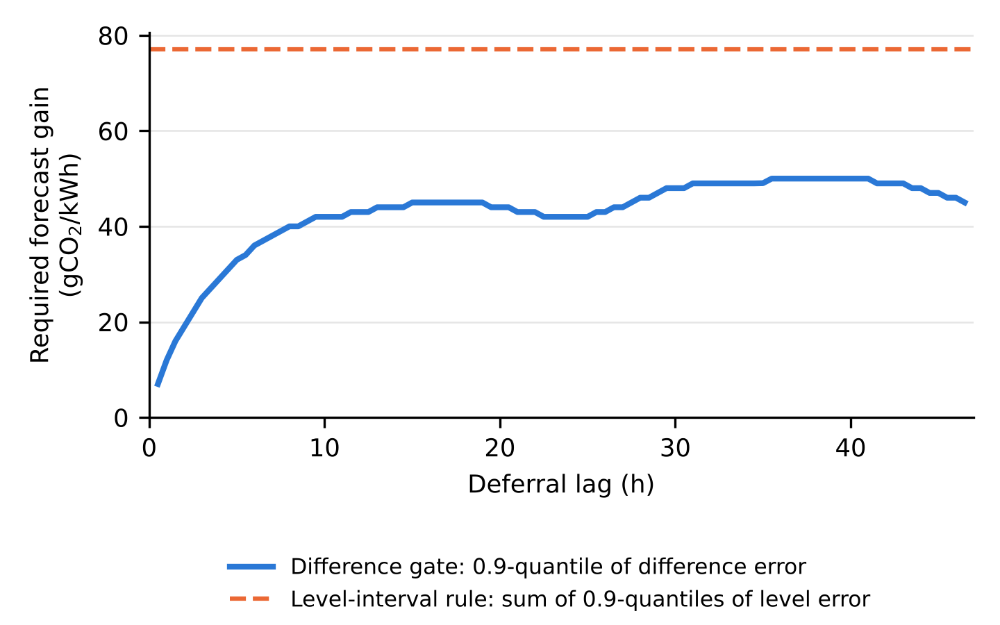

For every pair of windows already realised before t0:
e = (F̄u − F̄v) − (Āu − Āv) forecast gain minus realised gain
2 Quantile table q
0.9-quantile of e per bin (gCO₂/kWh)
lag \ horizon
0–6 h
6–12
12–24
24–48
0–3 h
16
18
16
16
3–6 h
30
34
32
32
6–12 h
–
43
43
44
12–24 h
–
–
45
46
24–48 h
–
–
–
48
Short deferrals need small gains, because errors in nearby windows cancel. Development data (GB, Aug–Oct 2023).
3 Decide each deferral a → b
Defer task i from its earliest start a to b only if
F̄a − F̄b > q[lag(a,b), horizon(b)]
Allowed: 1-h deferral, forecast gain 25 > 16
Blocked: 8-h deferral, forecast gain 30 < 43 → start at a
Among allowed starts, the largest margin wins; local-search moves use the same rule.
(b) Required gain by deferral lag

A rule that compares interval bounds on levels must demand the sum of the errors at both windows, 77 gCO₂/kWh at every lag. The difference gate demands only the error of the difference, which is much smaller for short deferrals. It therefore keeps the safe short moves and blocks the risky long ones.